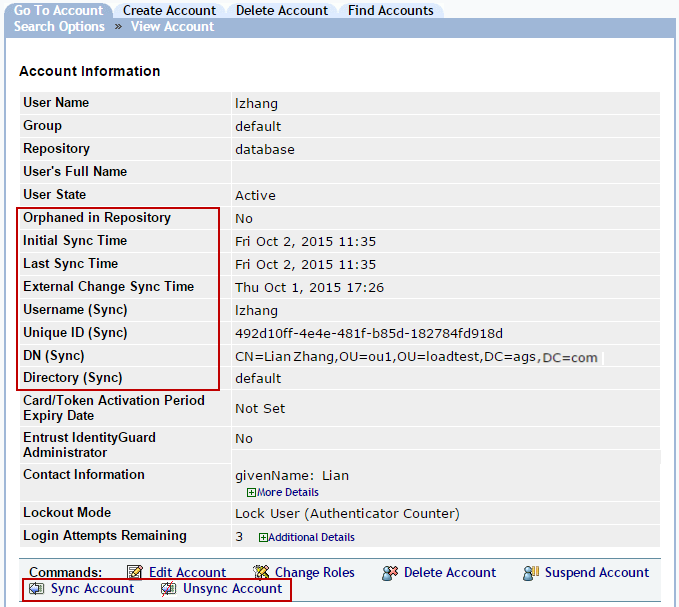
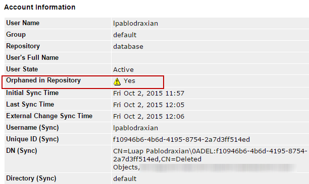

|
IdentityGuard Server 13.0 Administration Guide |
|
IdentityGuard Server 13.0 Administration Guide |
The following sections describe the behavior of the LDAP directory synchronization feature when administrators or users perform various actions.
After you configure the LDAP directory synchronization feature as described in this section, you create Entrust IdentityGuard user accounts for new LDAP directory users as described in Create new user accounts in a database synchronized with an LDAP repository
Entrust IdentityGuard creates the user accounts and performs a first synchronization operation for the new user accounts. The Entrust IdentityGuard Account Information pages for synchronized accounts display synchronization information and have the Sync Account and Unsync Account option buttons.

Synchronized data is read only, but full name and contact info have corresponding Entrust IdentityGuard user attributes. If these attributes are changed by a user through Self-Service or changed by an administrator through the Entrust IdentityGuard Administration interface, updated values are retained in the Entrust IdentityGuard database. They are not overwritten by the LDAP directory values during subsequent synchronizations.
If LDAP external authentication is being used, then even though the LDAP user has been enrolled in an Entrust IdentityGuard database, the expired or disabled status of the original LDAP account is still taken into account. What this means in practice is that if an LDAP user who has been enrolled as an Entrust IdentityGuard user uses external LDAP authentication, and their LDAP account has either expired or been disabled, then authentication will fail.
If the LDAP Sync Background Thread Enabled property is set to True, when a user is deleted from a synchronized LDAP directory container, Entrust IdentityGuard receives a notification and marks the user account as Orphaned in Repository.

Entrust IdentityGuard does not automatically delete Entrust IdentityGuard user accounts because doing so would delete all authenticator data for the user and it cannot be recovered if the user account was deleted by mistake from the LDAP directory.
If the LDAP Sync Background Thread Enabled property is set to True, when a user is moved to a different LDAP directory repository or to a node in the same directory that is not synchronized with Entrust IdentityGuard, the synchronization-related values in the account information are removed.
Note: LDAP directory groups are not mapped to Entrust IdentityGuard groups at this time, therefore, automatic Entrust IdentityGuard group changes based on a user’s LDAP directory group changes are not supported.
Several behaviors are possible depending to where the user account is moved.
● If the user account is moved to an Entrust IdentityGuard LDAP repository from the database, all operational and user data related to synchronization with an external LDAP directory is removed.
● If the user account is placed in an Entrust IdentityGuard database that does not have an LDAP Sync Directory configured, all operational and user data related to synchronization with an external LDAP directory is removed
● If the user account is moved to an Entrust IdentityGuard database with the same LDAP Sync Directory, the user remains synchronized.
● If the user is placed in an Entrust IdentityGuard database repository with a different LDAP Sync Directory, the user account is synchronized at the time of the update. If the user account cannot be synchronized (for example, because the user does not exist in the new LDAP Sync Directory), the user is orphaned. The following audit message is written:
Unable to synchronize user default/john with unique user ID 119d0d80-699d-4e81-8e4e-5477e22ac1b3 as the user cannot be found against the LDAP sync directory, the unique user ID will be removed and the user will be orphaned.
If a user's account name (typically defined by the cn or uid attribute) is changed in the LDAP directory, the Entrust IdentityGuard user and synchronization data remain in place because the source unique user ID has not changed. The list of users that can be enrolled in Entrust IdentityGuard will include the new user name, however, creation of this user will fail because the ID already exists in Entrust IdentityGuard for the user. To work around this, the administrator must explicitly update the Entrust IdentityGuard user name. Automatic handling of LDAP directory user name changes is not currently supported. This might be considered in a future release.
Note: In the current release, the user name used for external authentication must be the same as the Entrust IdentityGuard user name. If the LDAP directory user name changes and it is not updated in Entrust IdentityGuard (or vice-versa), external authentication will fail for the user.
If you move a user to another LDAP container that is also synchronized, the user's DN (Sync) value is updated in Entrust IdentityGuard so it points to the new container. If you move the user to a different searchbase, the user is orphaned in the Entrust IdentityGuard database and will have to be re-enrolled from the new searchbase.
The synchronized user data in the Entrust IdentityGuard database is a copy of what is in the LDAP directory, however, Entrust IdentityGuard makes real-time calls to the LDAP directory to validate a user's LDAP directory password and obtain user attributes for Entrust IdentityGuard RADIUS authentication and during smart credential activation.